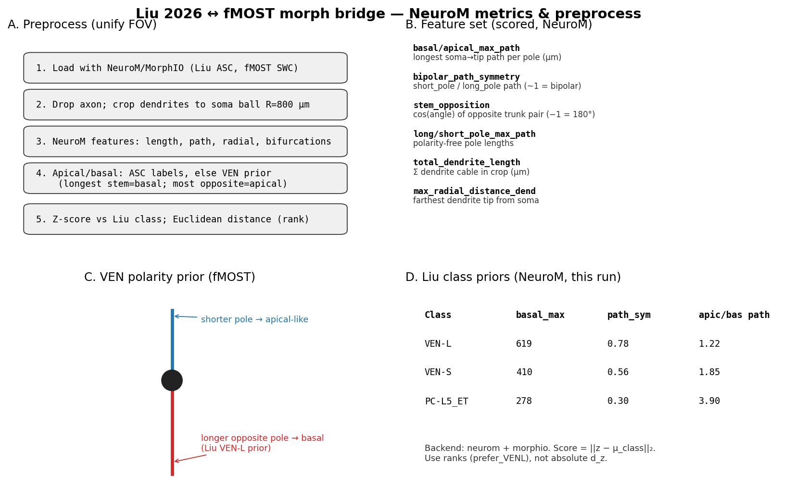
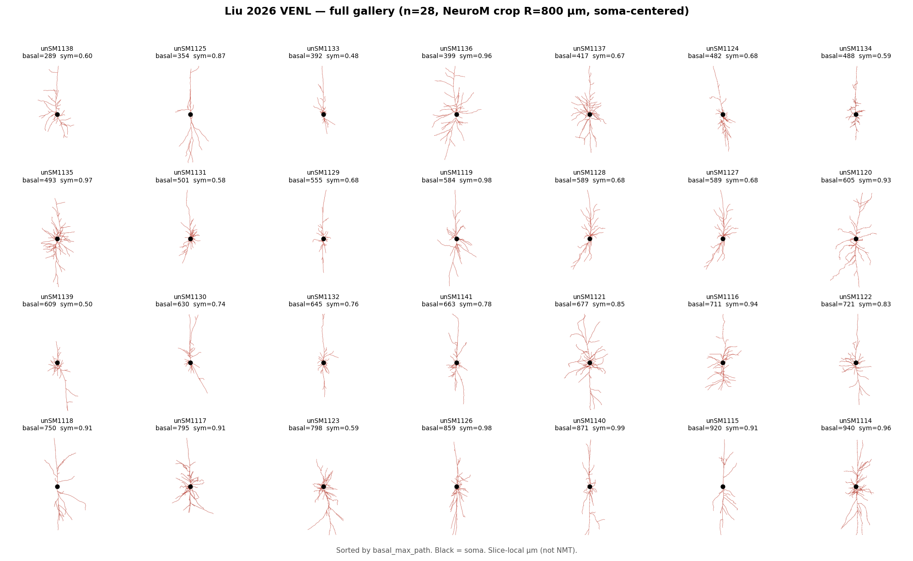
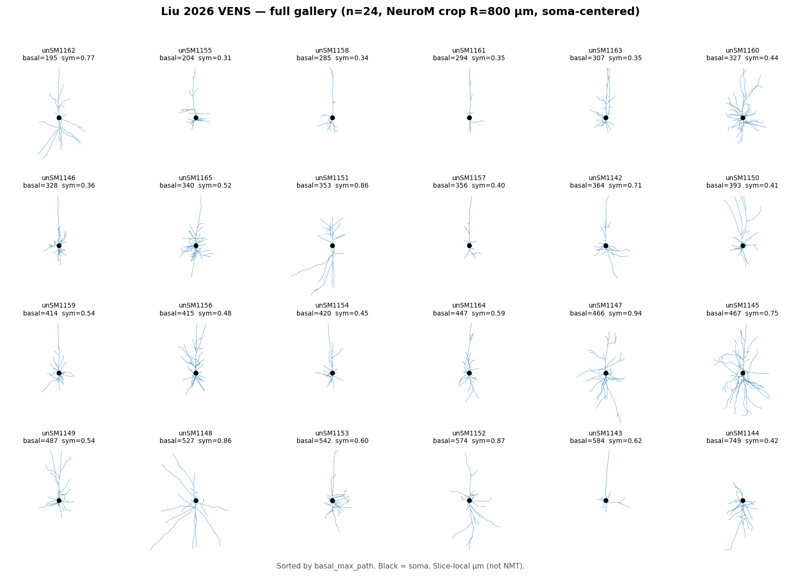
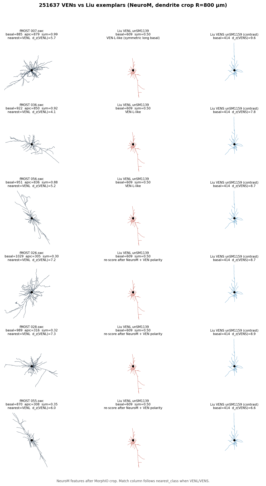
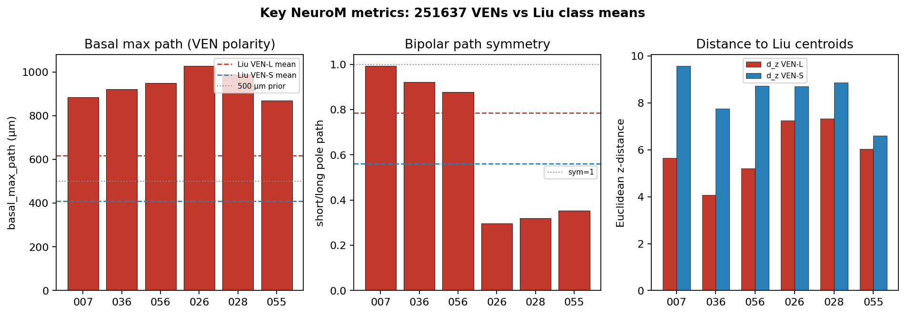

Backend: neurom + MorphIO. Branch test/liu-ven-fmost-bridge. User VENs: 007, 026, 028, 036, 055, 056. Dendrite-only, Rlocal=800 µm. See docs/METHODS.md.
neurom
test/liu-ven-fmost-bridge
docs/METHODS.md




